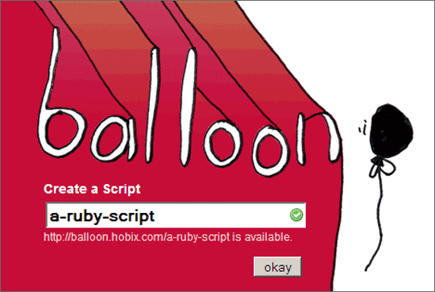
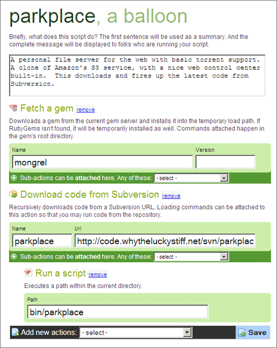
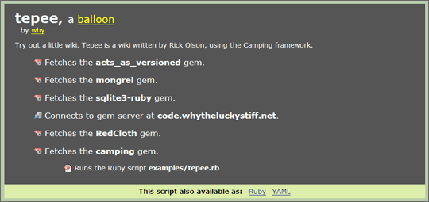

Balloon #
 Create new scripts from the home page.
 Add gems, code from Subversion, libraries from HTTP.
 Run other scripts (like the Tepee wiki).
The important thing here is that Gems are installed into temporary directories under ~/.balloon. So you can serve the current directory or fire up a wiki with a single command.
MenTaLguY
Oh huh whoa yes maybe hmm is? okay.
lukfugl
I keep getting:
no matter what balloon I try. I do have gems installed, and my RUBYOPT does load them… Any ideas?
MenTaLguY
That sounds like an open-uri issue. Can’t find the original
requireit overrode somehow.MenTaLguY
Uh, wait, no. open-uri doesn’t dick with
require. The quality of my posts is really slipping.MenTaLguY
Uh, wait, no. open-uri doesn’t dick with
require. The quality of my posts is really slipping.MenTaLguY
Uh, yay double-posting? I think I will take my leave from the internets for a while.
why
Yeah, sorry,
RUBYOPT='-rubygems'kind of messes things up. But I think I’ve got it. Give it another go, lukfugl.Jason B
People keep scratching itches I didn’t know I had
Why yes, I would love to quickly try out a web application with little setup on my behalf
chris
I know it’s nice that balloon is all temporary and self contained, but it would be really swell if, for instance, serve.rb could figure out I already have mongrel installed as a gem and just use that.
why
I might end up doing that. At least, I’ll probably have flags or a ~/.balloonrc to allow that.
For now, if you run serve.rb a second time, it’ll use the same Mongrel fetched the first time.
codeFiend
why, how do you manage to be so infuriatingly productive? I’ve never seen anyone churn out so much cool stuff so quickly…
lukfugl
@why: Thanks, working now!
FlashHater
I was wondering when this would be announced. The last time why posted about storing libraries in the ether, I started a little project to do something remarkably similar, but with sandboxing.
ponk
Wow. This is a beautiful thing. Such a neat idea, too. Yay why!
Peter Cooper
I get “uninitialized constant Balloon” on all the ones I try, but I think I’m probably missing something :) Looks very cool though.
why
Peter Cooper: What OS? What Ruby version? And what is your RUBYOPT ?
jakdak
i also get peter cooper prob. XP 1 .84 (RUBYOPT is the default from 1 click install)
andrea
andrea@fiction$ uname -a FreeBSD fiction 6.0-RELEASE FreeBSD 6.0-RELEASE #x: xxx xxx x xx:xx:xx xxx xxxx root@fiction.xxxxxx.xxx:/usr/src/sys/i386/compile/FICTION i386 andrea@fiction$ ruby -v ruby 1.8.4 (2005-12-24) [i386-freebsd6] andrea@fiction$ echo $RUBYOPT
andrea@fiction$ ruby -ropen-uri -e ‘eval(open(“http://balloon.hobix.com/parkplace”).read)’ -e:1: (eval):1: uninitialized constant Balloon (NameError)
why
Okay, there we go. Thanks, Peter, jakdak, andrea.
toby
why: I get the same thing as Peter Cooper above. Running Ruby 1.8.4 on OS X 10 .4.6 (compiled from source). RUBYOPT is not set.
toby
Nevermind
/me meekly returns to the shadows
toby
Problem
Tried loading the ParkPlace Balloon. All the gems loaded and everything and it started up seemingly fine. Here are the final two lines of output:
Thusly loading the above URL results in the following offensive XML snippet:
toby
Uh, seems like the Preview pane renders differently than the actual comment renderer. I spent two whole minutes converting those angle bracks to some [gl]t action.
nil
I broke myself :/ http://balloon.hobix.com/~nil
nil
also, non-existant users cause camping problems also
why
toby: ParkPlace is loaded, go to
/controlto see the control center. I’ll add a note.nil: Thanks, nil. Your page should be okay.
why
toby: Okay, the preview should be a bit better wrt to plusses and brackets.
nil
so… very… painful… under win32 :) mongrel and sqlite had ballons and win32 :)
nil
so… very… painful… under win32 :) mongrel and sqlite hate ballons and win32 :)
nil
_why, can you add in the ability to move around blocks? order of actions are important, so it’d be great, especially since i am planning on the fly ;)
floyd
having some problems with dependencies on os x, but i favor the cut of your jib. nice jobby. job.
Matt Todd
I’ve been anxiously waiting for this to get rolling more since you spoke of it at your performance at RailsConf. I pulled it up during your show and it produced errors, so I hadn’t tried it since.
Thanks for being a creative force in the Ruby community, and giving us a creative benchmark of sorts! Sounds strange and nonsensical, but it’s true: we have aspirations of being like _Why and kicking Ruby ass with all kinds of awesome shit.
Now, I think I’ll go and look over what the RailsDay people kept on doing that was ugly to see if there’s something I can do to make life easier… here’s hoping I can!
Cheers,
M.T.
o.O
ryan
ooh this is nice! really really nice! i can now send scripty postcards to my grand ma ma
J`ey
Very nice _why! Why is the script showing design different from the front page though? It would be good if the script pages followed the fron page design!
FlashHater
I would like to see Balloon support in TryRuby, as then I could send scripty postcards to my grand-ma-ma without having her install Ruby.
jonah
Balloon in Try Ruby would be great !! Perhaps theres many securities issues that would need to be addressed. also the processing might require a serious amount of server processing power :)
jonah
it would also be great if it could work out whether certain gems were already installed on the local machine
Peter Cooper
I forgot to come back sooner, sorry! However, seems it all works fine now. Great job :)
rixxon
Works fine, when I do things like I’m supposed to. However, I just can’t resist trying different methods. I expected this to work but didn’t:
curl http://balloon.hobix.com/test|ruby
or
wget
Ohttp://balloon.hobix.com/test|rubyError:
Proceed (or L to list this script’s actions)? [y/N/l] NoMethodError: undefined method `strip’ for nil:NilClass (eval):108:in `start’ (eval):106:in `start’ -:20
why
rixxon: STDIN is closed by the pipe. There’s a commented out line in balloon.rb which reopens, but I haven’t cared to test it on various shells.
mike
When I try to save a balloon, I get this:
Camping Problem!
Balloon::Controllers::Demo.POST
TypeError can’t convert String into Hash:
(eval):41:in `u’ (eval):41:in `qs_parse’ (eval):10:in `inject’ (eval):40:in `qs_parse’ (eval):22:in `initialize’ (eval):43:in `run’ /usr/local/lib/ruby/gems/1.8/gems/camping-1.4.115/lib/camping/fastcgi.rb:77:in `start’ /usr/local/lib/ruby/gems/1.8/gems/camping-1.4.115/lib/camping/fastcgi.rb:71:in `start’ /usr/local/lib/ruby/gems/1.8/gems/camping-1.4.115/lib/camping/fastcgi.rb:89:in `start’ /home/sites/hobix.com/balloon/lib/balloon.rb:37
mike
When I try to save a balloon, I get this:
Camping Problem!
Balloon::Controllers::Demo.POST
TypeError can’t convert String into Hash:
(eval):41:in `u’ (eval):41:in `qs_parse’ (eval):10:in `inject’ (eval):40:in `qs_parse’ (eval):22:in `initialize’ (eval):43:in `run’ /usr/local/lib/ruby/gems/1.8/gems/camping-1.4.115/lib/camping/fastcgi.rb:77:in `start’ /usr/local/lib/ruby/gems/1.8/gems/camping-1.4.115/lib/camping/fastcgi.rb:71:in `start’ /usr/local/lib/ruby/gems/1.8/gems/camping-1.4.115/lib/camping/fastcgi.rb:89:in `start’ /home/sites/hobix.com/balloon/lib/balloon.rb:37
Chris
I keep getting the following.
MissingLibrary: /home/chris/.balloon/parkplace/gems/camping-1.4.135/lib/camping/db.rb:7: ActiveRecord could not be loaded (is it installed?): no such file to load—active_record
anyone know what the G.O. is with that ?
Gavin
Sigh… http://balloon.hobix.com is borked, so I can’t see a description of what balloon is. It’s not the first time I’ve been dumbfounded by a _why project. Why can’t there be a brief description accompanying the announcement on redhanded?
why
Sorry guys, having some database issues.
Chris: I need to update Park Place to use the latest Camping gem.